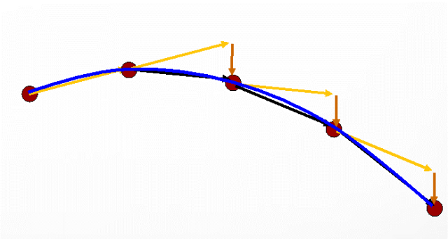

六、物理系统与碰撞
Contents
It was awful tasting medicine, but I guess the patient needed it. Sometimes life hits you in the head with a brick. Don’t lose faith
— Steve Jobs, Stanford Report, June 14, 2005
预计时间：4-6 * 45 min
课程内容
1、物理引擎基础
这是《守望先锋》游戏的一段场景。作为暴雪出品的首款团队射击游戏，自然要展现让玩家沉浸在超越真实世界的感官之美（如同验证音乐发烧器材，放些砸碎玻璃瓶瓶的声效一般）。《守望先锋》里很多物品都可以成为射击的对象，瓦斯罐、灭火器甚至是足球，并且会有不同的效果。

图片来源：《守望先锋》物理效果动图展示
这个游戏场景涉及哪些技术呢？光照贴图、物理引擎、动画、粒子系统等。
1.1 物理引擎
1、游戏世界运动分类
运动学（Kinematics），从几何的角度（指不涉及物体本身的物理性质和加在物体上的力) 描述和研究物体位置随时间的变化规律的力学分支。点的运动学研究点的运动方程、轨迹、位移、速度、加速度等运动特征，以及在不同空间中的变换。运动学是理论力学的一个分支学科，它是运用几何学的方法来研究物体的运动。
- 不考虑外部力作用下的运动
- 将一个物体作为几何部件，抽象为质点运动模型
- 仅考虑物体位置、速度、角度 …
- 研究方法：代数，如：线性代数
动力学（Dynamics），它主要研究作用于物体的力与物体运动的关系。动力学的研究对象是运动速度远小于光速的宏观物体。动力学的研究以牛顿运动定律为基础；牛顿运动定律的建立则以实验为依据。动力学是牛顿力学或经典力学的一部分，但自20世纪以来，动力学又常被人们理解为侧重于工程技术应用方面的一个力学分支。
在游戏物理引擎中，主要是刚体动力学。主要包括质点系动力学的基本定理，由动量定理、动量矩定理、动能定理以及由这三个基本定理推导出来的其他一些定理。动量、动量矩和动能（见能）是描述质点、质点系和刚体运动的基本物理量。
- 考虑外部力对物体运动的影响
- 包括重力、阻力、摩擦力等，以及物体的重量和形状，甚至弹性物体
- 通常将一个物体当作刚体
- 模拟物体在现实世界中的运动
2、物理引擎职责与作用
物理引擎(Physics Engine) 是一个软件组件，它将游戏世界对象赋予现实世界物理属性（重量、形状等），并抽象为刚体（Rigid）模型（也包括滑轮、绳索等），使得游戏物体在力的作用下，仿真现实世界的运动及其之间的碰撞过程。即在牛顿经典力学模型基础之上，通过简单的 API 计算游戏物体的运动、旋转和碰撞，现实的运动与碰撞的效果。
使用物理引擎，游戏开发者仅需考虑给游戏物体赋予形状（假设为均匀分布）和力，在游戏引擎驱动下自动完成运动与碰撞的计算。
1.2 物理引擎的实现
随着技术的进步，作为典型密集计算场景，物理引擎逐步形成了两大流派，分别对应以 NVIDIA 为代表的 PhysX 和 以 Intel + AMD 为代表的 Havok 两大平台。
PhysX 技术 目前是多数游戏引擎支持的平台。以下是官方的介绍
如果没有精准的物理效果模拟，即使再华丽的游戏也会显得静态而沉闷呆板。PhysX 技术可利用 GPU 的处理能力来执行复杂的物理效果计算。「无主之地 2 (Borderlands 2)」以及「地铁: 更后光芒 (Metro: Last Light)」等流行游戏均采用 PhysX 技术，该技术可为游戏带来充满动感的破坏效果、基于粒子的流体效果以及逼真的动画，令游戏变得栩栩如生。
Kavok 也是部分开源的物理引擎，也是被广泛支持的引擎。被 Intel 收购后，Havok特别针对多核多线程 CPU 进行优化。多线程 CPU 的普及以及Havok Physics引擎本身的高效率特点，使得 Havok 仅仅依靠 CPU 计算就能达到很好的物理模拟效果。
1.3 物理引擎基础知识
1、物理引擎学习与使用
物理引擎的使用可能是最简单的。你要做的事情可能就是将力作用在游戏物体上。
尽管你不必学习物理引擎原理与算法，如
- 物理引擎涉及复杂的运动学知识
- 碰撞计算与优化
为了有效使用物理引擎，你需要：
- 了解物理运动的基本知识
- 理解游戏离散仿真产生的特殊现象，避免游戏失真
- 了解可能导致性能问题的方面，使得游戏更加流畅
2、概念与建模
刚体（Rigid body）
刚体是指在运动中和受力作用后，形状和大小不变，而且内部各点的相对位置不变的物体。
- 绝对刚体实际上是不存在的，只是一种理想模型，因为任何物体在受力作用后，都或多或少地变形，如果变形的程度相对于物体本身几何尺寸来说极为微小，在研究物体运动时变形就可以忽略不计。
- 齿轮、绳索、滑轮不属于刚体，但属于该引擎。因此：物理引擎不只是刚体
运动的点模型
将物体的运动作为一个点，则一个如图物体
：
- 具有质量
- 具有中心
- 具有质心（不考虑形状）
- 假设1：物体是均质的
- 假设2：中心与质心重合
- 物体作用力分解为：
- 作用中心点上的 力（Force）
- 围绕中心点旋转的 力矩（Torque）
碰撞与物体几何形状
当有形状的物体发生碰撞时：
- 使用点模型？
- 必须计算在哪个点产生碰撞，并计算力和力矩
可计算碰撞的物体：
- 必须是 （Convex）物体
- 如何判定
- 必须是三角形表示的多面体（三角网格）
- 2D：物体分解为若干三角形
- 3D：凸物体表面用三角形，分解为四面体表示
- 如果是 Concave 物体
- 必须分解为多个凸物体组合
2、Unity 物理引擎实现
要产生令人信服的物理行为，游戏中的物体必须正确加速，并受到碰撞、重力和其他力的影响。Unity的内置物理引擎为您提供了处理物理模拟的组件。只需几个参数设置，您就可以创建以现实方式被动行为的对象(例如，它们将被碰撞和跌落移动，但不会自己开始移动)。通过从脚本中控制物理，您可以为对象提供车辆、机器甚至一块织物的动态。
Unity 内置物理引擎建立在 PhysX 基础之上。
2.1 常用物理组件
- Rigidbody 刚体组件
- 点运动模型相关属性
- 响应力和力矩
- Collider 碰撞器
- 物体碰撞与碰撞检测属性
- 碰撞现状一般不是物体形状
- Mesh 网格
- 物体形状属性
- Joint 连接器（自学）
- 其他
- 衣服、常力、用户定义的力场等等
1、角色控制器
第一人称或第三人称游戏中的角色通常需要一些基于碰撞的物理效果，这样角色就不会跌穿地板或穿过墙壁。但是，通常情况下，角色的加速度和移动在物理上并不真实，因此角色可以不受动量影响而几乎瞬间加速、制动和改变方向。
角色控制器 (Character Controller) 主要用于第三人称玩家控制或者是不使用刚体物理组件的第一人称玩家控制。

操作 06-01，观察角色控制器相关组件
- 导入
Fantasy Skybox资源包，加载 demo 场景 - 导入标准资源包的 Characters
- 分别将第一人称、第三人称预制添加到游戏场景
- 观察角色控制器相关物理组件
2、刚体
刚体 (Rigidbody)使游戏对象的行为方式受物理控制。刚体可以接受力和扭矩，产生逼真的移动。
为游戏对象添加刚体: 菜单 -> component -> physics -> rigidbody

必须掌握的属性：
- 质量 mass
- 阻力 Drag
- 角阻力
- 使用重力
- 是运动学控制。表示该物体是静态的，不受力影响
- 内插值。 官网说法当运动急动时需要插值
- 碰撞检测。默认是离散检查。高速物体需要连续检测
- 控制运动自由度。
3、常量力与力矩
- 系统默认的力作用在刚体重心
- 力矩，产生旋转
- 力与运动
- 𝑓 ⃑=𝑚 ∗ 𝑎 ⃑
为物体添加恒定力: 菜单 -> component -> physics -> constant force

- 力（Force）是一个作用在重心的向量
- 力矩（Torque）是产生角加速度的力
操作 06-02，验证力与刚体运动
在项目中
- 自由落体
- 添加一个 cube
- 为 cube 添加刚体，使用重力
- 运行（观察物体自由落体）
- 与静态物体碰撞
- 使用 地面 或 plane 使得 y=0；并使 cube 的 y=3
- 运行（观察到 cube 落在 地面或plane 上）
- 力的作用
- Cube 添加 Force 组件
- 设置力 y=9.8 或 y=10
- 运行（请问系统默认 g=9.8 或 10 ）
- 设置力 f=(10,0,0)
- 运行（观察由于碰撞产生的旋转）
4、碰撞(Collider)组件
碰撞体 (Collider) 组件定义对象的形状以便用于物理碰撞。碰撞体是不可见的，其形状不需要与对象的网格完全相同，事实上，粗略近似方法通常更有效，在游戏运行过程中难以察觉。
碰撞的效果不仅受形状的影响，而且受到物体的物理材料的影响，产生摩擦力和反弹效果。
- 有形物体的属性
- 一个 mesh 组件
- 一个或多个 Collider 组件
Collider 常见类型
- 基本碰撞器
- Box Collider
- Sphere Collider
- Capsule Collider
- 复杂碰撞器
- Mesh Collider
- Wheel Collider
- Terrain Collider
5、复合碰撞体(Compound Collider)
Mesh 碰撞器是万能的？
- Too young！能做碰撞计算的只能是 凸的！！
- 处于性能的考虑，基本碰撞器是最有效的
- 但是：… …
复合碰撞体是原始碰撞体的组合，共同作为单个刚体。如果模型在性能方面过于复杂或成本过高而无法精确模拟，因此希望使用简单的近似值以最佳方式模拟形状的碰撞，复合碰撞体将派上用场。要创建复合碰撞体，请创建碰撞对象的子对象，然后将碰撞体组件添加到每个子对象。这样就能轻松独立定位、旋转和缩放每个碰撞体。可以通过许多原始碰撞体和/或凸面网格碰撞体构建复合碰撞体。

在上图中，游戏对象 Gun Model 附加了一个刚体，使用多个原始碰撞体作为子游戏对象。当刚体父对象由于受力而移动时，子碰撞体会随之移 动。原始碰撞体将与环境的网格碰撞体碰撞，而父刚体将根据所受的力以及其子碰撞体与场景中其他碰撞体的交互方式来改变自己的移动方式。
- 复合（组合）物体
- 复杂形状分解
- 用变换组合
- 组合1：？
- 仅 Root 对象拥有刚体，并拥有多个基本碰撞器
- 组合2：？
- Root对象拥有刚体，每个对象拥有基本碰撞器
6、碰撞体相互作用
碰撞体彼此之间的相互作用根据刚体组件的配置不同而不同。三个重要的概念
- 静态碰撞体 (Static Collider)（即完全没有附加任何刚体）
- 刚体碰撞体 (Rigidbody Collider)
- 运动刚体碰撞体 (Kinematic Rigidbody Collider)。
7、碰撞事件(Collision Events)与脚本
碰撞消息与事件
- 消息
- OnCollisionEnter，OnCollisionExit，OnCollisionStay
- 事件与碰撞结构
- 处理消息的行为（脚本）接收该物体上刚体/碰撞器发出的消息
- 例如：
|
|
操作 06-03，碰撞器组合与事件接收
- 碰撞与事件
- 实验对象：plane，cube（刚体），事件接收程序
- plane + 接收程序的输出？cube + 接收程序的输出？
- 组合碰撞器
- 实验对象：plane, cube1(0,0,0), cube2(1,1,0)(red), root(0,3,0) 是 cube 的容器，事件接收程序
- 实验 cube 自由落体与 plane 碰撞
- 组合1
- root 是刚体，cube 有碰撞器
- 组合2
- root 是刚体，且有两个碰撞器， cube 碰撞器
- 组合3
- root 不是刚一组不太平滑的点 近似算法，Δt越大则偏差越大（求解器内部做插值） Δt要尽可能相等，否则就会感到跳跃 体，cube各自拥有刚体和碰撞器
- 事件接收器挂载不同物体，并观察现象

2.2 离散引擎引发的计算问题
1、运动轨迹的近似与积累误差问题
- 线性动态：以简单抛物线为例
- 力: F(p,t)
- p: 当前位置
- t: 当时时间
- 物理 Update 的公式

- 结果
- 一组不太平滑的点
- 近似算法，Δt越大则偏差越大
- Δt要尽可能相等，否则就会感到跳跃
- 引擎设计
- 刚体 (Rigidbody) 组件，支持插值计算
- 脚本，使用 FixedUpdate 函数操作物理引擎涉及的游戏对象
2、线性动态计算问题
又称为 动画综合症 – Flipbook Syndrome
当你用慢动作播放运动…
当旋转运动比较快…
- 常用解决方案
- 在每个计算帧做内插值(p0,p01,p02,p03…p1)
- 做旋转误差补偿，内插值会使物体抖动哦。
- Rigidbody.Interpolate 刚体的插值参数（外插值，预测下一个位置消除抖动）
3、碰撞计算问题
- Tunneling(穿越效应)
- 当物体运动足够快
- 或物体又小又快
- 如：射击的子弹
- 快速转动臂膀
不了解这些问题，后果很严重！ 又例如：
- 常用解决方案
- 刚体碰撞检测属性
- 连续检测（a）
- 连续动态检测（b）
- Wheel动态碰撞（c）
更多官方连续碰撞检测 (CCD)技术说明
2.3 物理引擎编程与使用
1、基本事项
- Fixed-update
- 修改物理引擎相关组件属性，请使用Fixed-Update
- 确保物理引擎计算间隔稳定
- 根据场景需要设置刚体属性
- 内插值、外插值的使用
- 连续检测方法
- 特殊情况，用射线碰撞替代子弹碰撞
- 复合物体
- 父子对象不能同时拥有刚体
- 其他
- 不要逐帧移动一个静态碰撞器
- 不要同时使用物理运动与运动学移动物体
2、刚体编程
刚体组件脚本 API：
-
刚体与力
- Rigidbody 脚本 API，让您能够向对象施加力，并以逼真的物理效果对其进行控制。例如，可以根据车轮施加的力来指定汽车的行为。根据这些信息，物理引擎可以处理汽车运动的大多数其他方面，因此汽车可进行逼真的加速并适当地响应碰撞。
-
使用 FixedUpdate 函数
- 在脚本中，建议使用 FixedUpdate 函数来施加力和更改 Rigidbody 设置（而不是使用 Update，Update 用于大多数其他帧更新任务）。这样做的原因是物理更新在测量的时间步骤中执行，而时间步骤与帧更新不一致。FixedUpdate 在每次进行物理更新前调用，因此在该函数中做出的任何更改都将直接处理。
-
“慢动作”现象
- 刚开始使用 Rigidbody 时，新手常常会遇到游戏物理效果似乎以“慢动作”运行的问题。这实际上是您的模型使用了不适当的缩放导致的。
-
主要变量属性
- 速度（velocity ）角速度（angular velocity）
- 质心（center of mass）
- 物体中心（坐标原点）与质心一致是特例
- 特别是组合物体，设置质心会使运动效果更真实
- 自定义内插值步数（solver iteration count）
- 提高/降低计算轨迹精度
- 刚体休眠（sleep）
- 设置最低速度，减少引擎计算量
- 限制运动自由度
-
对刚体施力或力矩
- RigidBody.AddForce(Vector3 force, ForceMode mode);
- RigidBody.AddForceAtPosition(Vector3 force, Vector3 position, ForceMode mode);
- … …
-
力的模式(ForceMode)
编程 06-04，使用代码产生重力
- 阅读 Rigidbody.AddForce API
- 修改案例代码，挂载到带有刚体的物体后，产生重力效果
|
|
注意事项，如何瞬移刚体
刚体组件提供
- MovePosition (position : Vector3)
- MoveRotation (rot : Quaternion)
它们会在本帧物理引擎计算结束后执行。（新版本 API 似乎没有这样说明了）
2、碰撞编程
碰撞涉及
- 碰撞器 Collider及其子类；
- Collision 类包含有关接触点、冲击速度等的信息；
- 碰撞消息（进入，退出，碰撞中）与处理
碰撞器重要属性与方法
- Collider.attachedRigidbody 碰撞体附加到的刚体
- Collider.ClosestPoint 碰撞（最接近的）点
- Collider.Raycast 针对特定对象的射线碰撞，可减碰撞计算时间
碰撞消息及处理
- 进入，第一次接触
官方示例
|
|
3、碰撞器 – 作为触发器
- 触发器（Trigger）
- 一种碰撞盒，产生与运动无关的碰撞，并触发事件
- 用 Is Trigger 属性表示是否触发器
- 刚体碰撞器
- 刚体的碰撞盒是近似形状（运动计算性能与效果折中）
- 普通游戏角色的碰撞器仅是胶囊模型
- 除了部分物理仿真应用，并不需要精确模型
- 不同刚体的碰撞盒不能相交（不能穿透）
- 需要进行物理计算
- 触发器
- 碰撞计算是高效的（成批算的！）
- 很多应用的碰撞不需要物理影响运动
- 触发器可以放在任意物体，任意位置
要点：刚体碰撞消息 PK 触发器消息
官方说明：碰撞体
案例研究：子弹“爆头”的实现
- 在角色头部位置添加矩形或胶囊碰撞器并作为触发器
- 高速子弹使用射线检测与该碰撞盒碰撞。（多数游戏就是这样做的，子弹就是给你看的）
- 低速子弹则使用 CCD技术 检测碰撞
打靶游戏：本章作业研究
- 靶标对象
- Root
- Target（显示网格）
- trigger 1..5（一圈一个，计分用）
- 箭对象
- Root（射中后，变为运动学刚体）
- 箭头（射中后，箭头会 disabled）
- 箭身（射中后，箭身插在靶标上）
触发器与碰撞器的选择，案例
- 飞碟游戏中飞碟
- 触发器，胶囊体，如果碰撞后飞碟立即回收
- 碰撞器，胶囊体，期望物体落地后弹跳一会
- 《反恐精英CS》玩家角色
- 碰撞器，胶囊
- 触发器，头部球/或长方体
- 天空飞行的鸟
- 碰撞器，矩形体（可变，展翅与死后不展翅不一样）
- 炮塔
- 碰撞器，胶囊体用于物体主体子对象
- 触发器，胶囊体用于攻击范围子对象
- 子弹
- 触发器，方体。条件，遇到任何物体立即回收
4、碰撞计算原理与过程
- Axis-Aligned Bound Box(AABB)
- 计算简单，高效
- 与事实差异大
- 物理碰撞计算过程
- AABB碰撞
- 物体碰撞
- Collider的重要属性与方法
- bound
- ClosestPointOnBounds 用来计算受到爆炸伤害点数
- Raycast 用来加速计算碰撞
5、其他注意事项
- Mesh Collider 网格碰撞器
- 能不用就不用（性能考虑）
- 只有凸的网格能与网格碰撞
- 任意网格可以与基本碰撞盒碰撞 注意物体设计大小
- Unity 空间单位 1 大约 1米，所以人高大约2
- 物体缩小、放大会影响性能
编程 06-05，爆炸效果
- 设计四个物体在 plane 上
- 从高空掉落一物体，在地面发生爆炸
- 产生炸飞的效果
参考代码：
|
|
2.4 中级技术-势能与场
势能与场（Potential Fields）是游戏智能的重要组成，也是物理系统要做的重要任务。常见案例：
- 追踪
- 捕获
- 导航
- 现实世界的场
- 重力场
- 引力
- 电磁力场
- … …
- 社会中的场
- 吸引力 -（食物）诱惑力
场的本质
力在空间中的分布。场使运动更真实与智能
例如：捕鱼
不同设计方案的对比
- 设计轨迹方程
- 设计力场图
编程 06-06，吸引力与场
- 平面上有若干白色小球体，随机摆放
- 有一红色小球按一定轨迹移动（给一个初始速度）
- 在红色小球一定范围内，白色小球按某个概率受到吸引（变黄）并追随移动，它们之间距离越近这个引力越大。
- 当黄色小球发现追不上，则会放弃而变白
网上的参考代码（不一定满足题目要求）：
|
|
3、面向对象的编程 - 设计模式：对象的组织结构
结构型模式描述如何将类或对象按某种布局组成更大的结构的一般方式。
结构型模式分为以下 7 种：
- 代理（Proxy）模式：为某对象提供一种代理以控制对该对象的访问。即客户端通过代理间接地访问该对象，从而限制、增强或修改该对象的一些特性。
- 适配器（Adapter）模式：将一个类的接口转换成客户希望的另外一个接口，使得原本由于接口不兼容而不能一起工作的那些类能一起工作。
- 桥接（Bridge）模式：将抽象与实现分离，使它们可以独立变化。它是用组合关系代替继承关系来实现的，从而降低了抽象和实现这两个可变维度的耦合度。
- 装饰（Decorator）模式：动态地给对象增加一些职责，即增加其额外的功能。
- 外观（Facade）模式：为多个复杂的子系统提供一个一致的接口，使这些子系统更加容易被访问。
- 享元（Flyweight）模式：运用共享技术来有效地支持大量细粒度对象的复用。
- 组合（Composite）模式：将对象组合成树状层次结构，使用户对单个对象和组合对象具有一致的访问性。
有些同学问，proxy 与 facade 一直傻傻分不清？ 这证明你学的不错啊！
1、业务需求
我们学完物理运动，现在的需求是：
- 不想放弃 CCActionManager
- 新建 PhysisActionManager
新的设计如下图：
2、Adapter 模式
- 什么是 Adapter 模式？
- ？
- Adapter 模式使用场景
- 你设计了电商网站，它有一个实用简单同一的支付接口，现在这个接口要对接工行、农行、… 、微信、支付宝、财付通、…的接口。你明白设计如何应对业务变化的吗？
- 在游戏中有哪些场景会用到 Adapter 呢？
- 。。。?
4、小结
- 物理引擎基础
- 力与运动、物体碰撞的抽象
- Unity 物理系统的刚体、碰撞组件使用
- 离散系统动画综合症、穿越效应
- 产生条件、原理、解决方案
- 物理引擎编程
- 重心、力的使用
- 触发器的作用
- 碰撞器、触发器的综合应用
- 力场与智能
- 面向对象设计技巧
- Adapter 模式
5、作业与练习
1、改进飞碟（Hit UFO）游戏：
- 游戏内容要求：
- 按 adapter模式 设计图修改飞碟游戏
- 使它同时支持物理运动与运动学（变换）运动
2、打靶游戏（可选作业）：
- 游戏内容要求：
- 靶对象为 5 环，按环计分；
- 箭对象，射中后要插在靶上
- 增强要求：射中后，箭对象产生颤抖效果，到下一次射击 或 1秒以后
- 游戏仅一轮，无限 trials；
- 增强要求：添加一个风向和强度标志，提高难度
Author 潘茂林
LastMod 2020-08-30